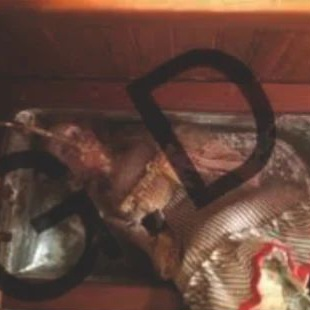

back
back
OUR HISTORY
Manflesh MeatCo was founded after founder Gizmo Dyer (pictured below) dreamt of a world without roadkill.

His mother told him "that theres my mate! yeah hes a lovely guy yeah guess what his job is. you know when animals get hit on the road at night yeah its his job to go clean them up, all the dead animals." After hearing this young Gizmo was was inspired. In just 20 short years he transformed himself into the figurehead we know him as today, revolutionising the world of roadkill.
Since then the company has greatly expanded to new heights, leading the charge against the monogastric meat monsters. With the defeat of the leg lurker, the cultivation of the oil refinery girls, the establishment of the MMMOM and all the numerous victories throughout the hills, the momentum is truly astounding! Where will it all go next?
THE COMPANY MOTO:
i will do everything i can
to love you forever
until your flesh falls off
and then ill love your bones
and the dust that they become
ill tuck you under the sheets
and ill bite off your feet
multigastric manflesh meat
The Defeat of the Leg Lurker and the Monogastric Manifesto
Gizmo is a lifelong resident of this town and has been raised, just as you have, in fear of what lopes throughout the hills around us. But the fact that the only thing keeping those flesh eating beasts from reaching down to us from high upon those hills is the warm light of the town, it disgusted him. Surely this would not protect us forever. Surely we must prepare? reasoned Gizmo.
And so the Monogastric Manifesto was created, a steadfast philosophy born from pure flesh chewed and digested and chewed again. Just as nature intended! GD resolved to rid these hills of the beastly and bacterial monogastric disease, what kind of one stomached life is worth living anyway... We're doing them a favour really.
The first great victory came after Gizmo led a posse of men armed with tools fashioned from scrap metal and coaxial cable to the lair of the leg lurker. The vicious beast protruded from deep inside the earth. Rearing its ugly head, it lashed out injuring many, Gizmo included (wounds that would plague him for the rest of his life, a poison slowly killing him). Just as it seemed all hope was lost, a brave young man distinguished himself from the rest by leaping forwards and severing the head of the leg lurker with a fibre optic flash. But, sadly, as the head fell back into the earth, with its dying breath, it clasped it jaws around him; stealing him away deep beneath the surface. That man was Coaxial Max. He was tragically taken from us that day, crushed deep into the earth. God knows how deep that hole went, may he forever rest in pits.
Coaxial Max sacrificed himself and left behind the great fibre route blazing a trail for all future victories against the single stomached disease.
Tools
With the coaxial route acting as a foundation, Manflesh MeatCo was expanded and set to work manufacturing stainless steel devices of GD's design. Tools for operation on mutant monogastrics. Their design and usage is a closely guarded secret and they can only be operated by the most highly trained of professionals, such as our skilled flayers and surgeons. They proved immensely successful at driving the horde of sickly slurping sluggish sad sickly beasts down below the ground and are still used to this day.
Oil Refinery Girls and their uses
As the war waged it was clear that the tools alone weren't enough. Gizmo crouched down on the floor and set to work experimenting. He had a vision of a perfect multigastric being. He resented his own species' cud chewing and desired to rid the world of this. He sought out the sadness of unchanging, the impermanent cover, the imitation crab meat, the residue and the unclaimed. Deep underground he led an expedition, far past the surface caves and abandoned mines, right into the heart of the dogmatic deadLink and almost to the potential pits themselves. Here he found the perfect multigastric specimen floating on the surface of a tranquil pool of water. This was the MOAORG (Mother of all Oil Refinery Girls).

The MOAORG (interference is common around ORG's)
Multigastric without that gross cud!
From this GD was able to cultivate his very own lab grown Oil Refinery Girls. He learnt to harness and control them and the acidic trails they leave behind. Their uncanny appearance and ability to mulch up anything and digest it in full, including the previously inexorable monogastric monsters (who they had been selectively bred to salivate at the thought of). Finally, a permanent solution to the monogastric issue.

Clear photos of these things are hard to get

Gizmo, however, fell ill and died before his creation was complete. Always unsatisfied with it he sought true multigastric perfection. Something that could be untouchable and unreal.
GWDD
and the hunt for Dave
Unavaliable. CLICK HERE FOR MORE INFORMATION REGARDING MMMOM